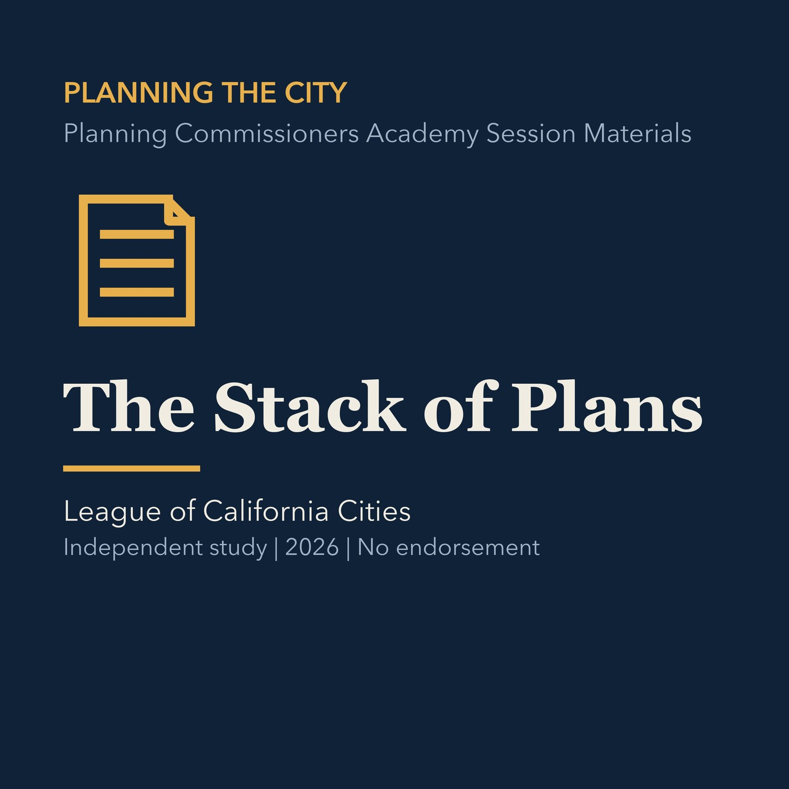

EPISODE 02
The Stack of Plans
Organizes state law, general plans, specific plans, zoning, overlays, and project approvals.

- Stable GUID
86d1741a-7c03-528c-a5b5-e24793c8e5df- Release
- planning-commission-prep-v2026.3
- SHA-256
cc7dc71f1bce31f624f354ba9bca699b8e76339139447b788da71a9a523f7cf0